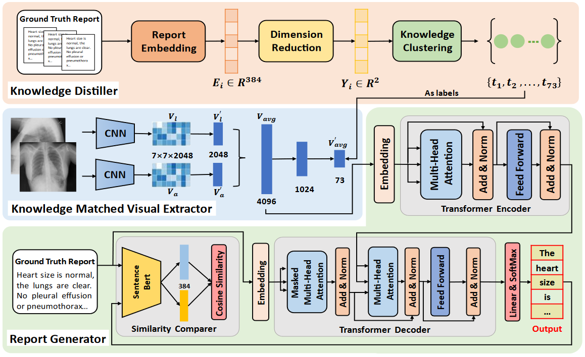
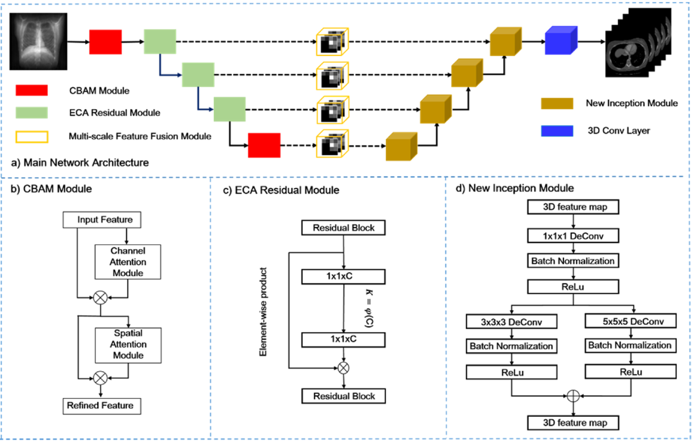

|
|
Jun Li
Ph.D. Student
Technical University of Munich, Munich Center for Machine Learning


|
Short Bio
|
I am currently a first year Ph.D. student in the School of Computation, Information and Technology, Technical University of Munich, supervised by Prof. Julia Schnabel. I am funded by the Munich Center for Machine Learning (MCML).
Previously, I received the M. Eng. degree from University of the Chinese Academy of Sciences , under the supervison from Prof. Ying Hu.
I am a dedicated researcher focused on the intersection of deep learning and healthcare, particularly in the analysis of medical images. My passion lies in improving the practicality of deep learning algorithms, with a primary focus on Vision and Language models, Cross-Modality Generation, and Multi-Modality Learning. Through my work in these areas, I aim to advance deep learning techniques and their transformative impact on healthcare.
|
Publications
|

|
A Self-guided Framework for Radiology Report Generation.
Jun Li, Shibo Li, Ying Hu, Huiren Tao.
Medical Image Computing and Computer Assisted Interventions 2022, (MICCAI), 2022.
(Student Travel Award, Top 5%)
(Early Accept)
[paper]
[project]
|
|

|
XctNet: Reconstruction network of volumetric images from a single X-ray image.
Zhiqiang Tan, Jun Li, Huiren Tao, Shibo Li, Ying Hu .
Computerized Medical Imaging and Graphics (CMIG), 2022.
[paper]
|
Awards
- National Scholarship, from the ministry of Education of China, 2022.
- Outstading Graduate of Shandong Province, 2020.
- Outstanding Student, from University of Chinese Academy of Sciences, 2021-2022.
- Outstanding Student Leader, from University of Chinese Academy of Sciences, 2021-2022.
- National 1th Prize in RoboMaster University Technical Challenge, 2019.
- National 1th Prize in RoboMaster University Championship, 2019.
- National Special Prize in RoboMaster University Technical Challenge, 2018.
- National 2th Prize in RoboMaster University Championship, 2018.
- Pengcheng scholarship of Shenzhen University (Top 1%), 2019.
|
Service
- Conference Reviewer:
- International Conference on Medical Image Computing and Computer-Assisted Intervention (MICCAI) 2024.
|
|